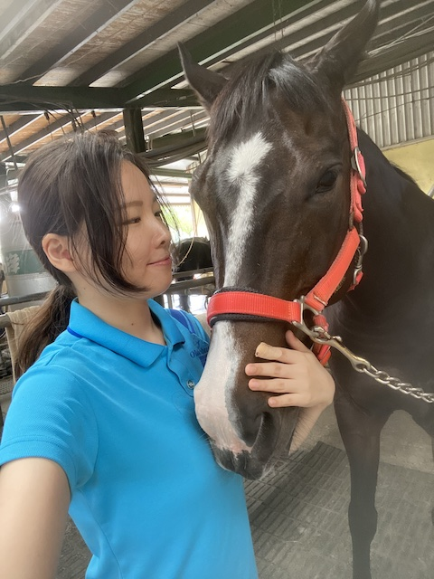
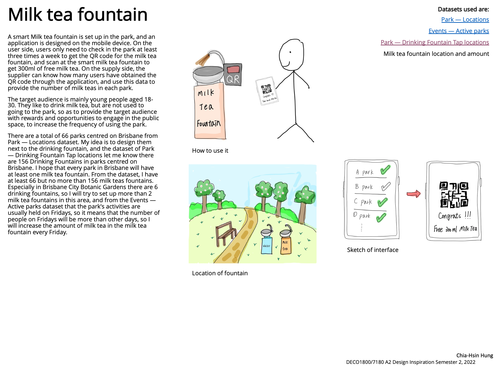
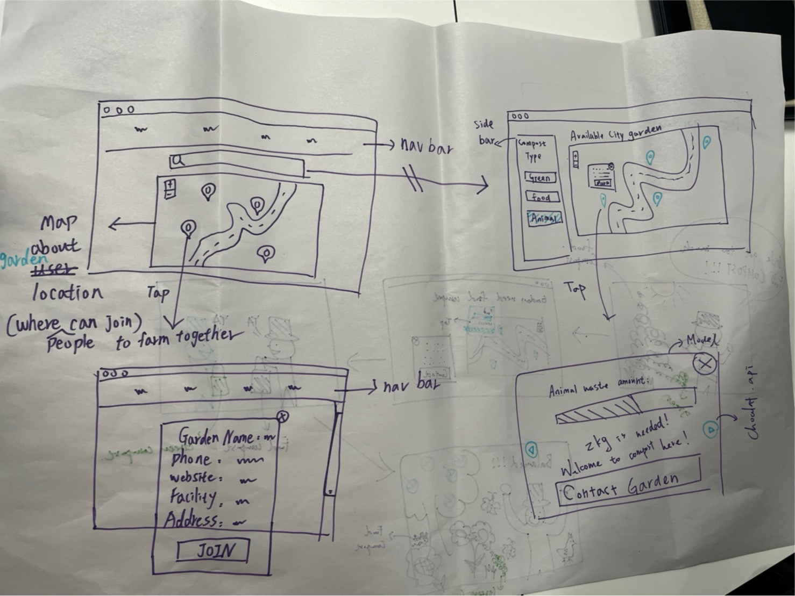
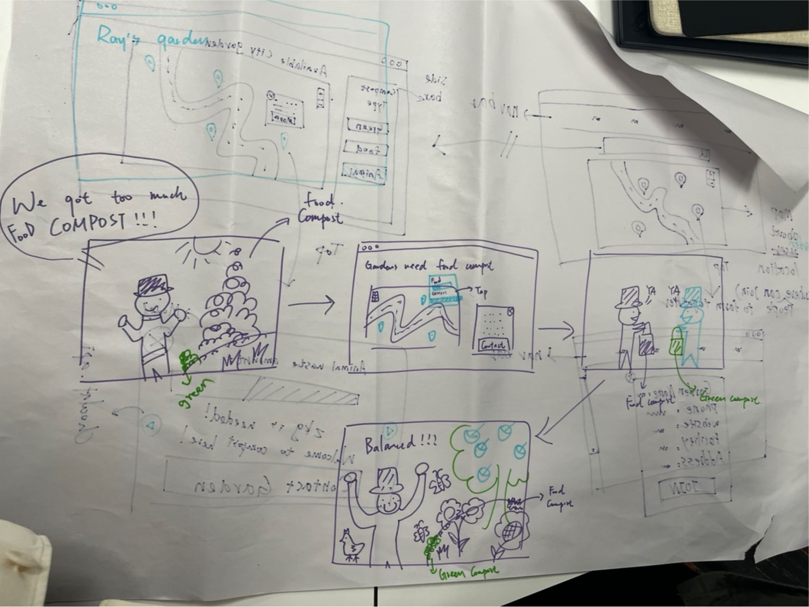
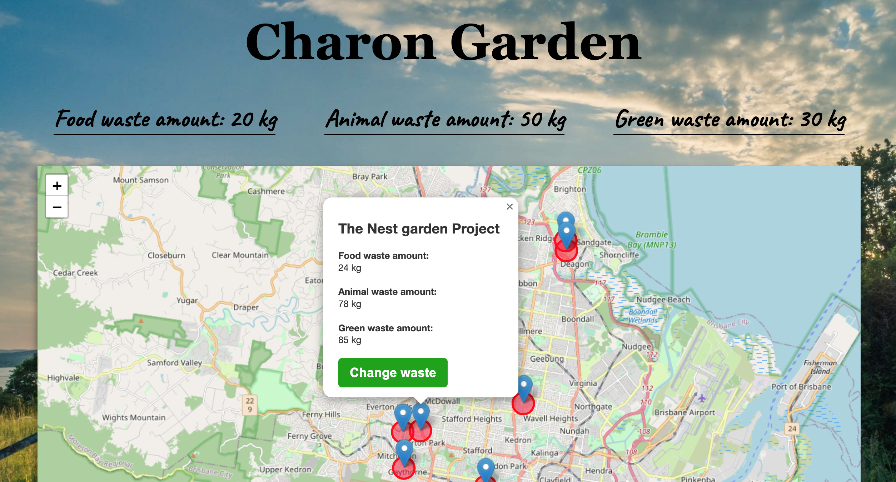

Hello I’m Olivia, my undergraduate degree is in mass communication,
and now I am studying for a master's degree in information technology.
My hobby is sports like equestrian and fitness.
I am interested in web develop, and I am also an optimistic person who is good at teamwork.

Portfolio
Before designing this portfolio, I survey many of the portfolio designs.
First of all, I design the framework which I like.
The reason why I choose the one-page content design is that I hope that this website can be used in the future.
As a portfolio of the job interview,
the one-page design allows employers to read more conveniently and quickly without waiting for page jumps.
For the color part, I chose warm and light colors, which just combined with my personality,
because I think I am a warm and optimistic person.
Reflection of Portfolio:
I think this project is a success, I learned to design it as a responsive web design and I learned to control Html components from JavaScript more accurately, such as scroll position to adapt to a one-page design.
In the future, I hope to add all my projects to this website to make the whole portfolio more complete.
A2

From the studio class, through the Brief1 public space, and from the perspective of encouraging people to use public space, I came up with dog fountains. I hope that every public space can be set up for dog fountains, so that dog lovers are more willing to go to the public space.
https://www.nps.gov/subjects/developer/api-documentation.html
I found this API, which provides National Park Service (NPS) data about the park's amenities, events, and news, and allows us to know where the fountain should be best placed and how much we can set up.
Reflection A2:
I think this project is not a success and needs to be improved, first of all, I thought of the milk tea fountain through the dog fountain, but I ignored my target audience and feasibility, I ignored the milk is perishable easily, the bottom of the milk tea fountain needs to pay extra to preserve the milk tea. In order to improve this project, I should first set the target audience and calculate the cost behind the project, taking all factors into account, and then design.
A3
First of all, we asked each member to explain their poster. We selected the topic that we are most interested in that is the circular economy, and the related poster is from Jung “My garden, your garden”. We followed his poster's purpose, and interaction to come up with a scenario.
And we collect all member's ideas to decide target audience which includes the gardens who has excess specific compost and other gardens that need more specific compost for irrigation.

In the beginning, we were not very familiar with this field, we learned about our topic from some datasets given in class, and the main ideas were generated by the life situations encountered by the team members. To get a complete understanding, we searched for existing applications and literature on how to improve the circular economy of human society and the environment from food waste.

I participated in the idea of the layout concept. We drew low-fidelity prototypes together in the studio class, ranging from the dashboard, navigation bar and popups, and buttons to filter compost types.
We talked about connecting with the community, so I also search for how to import twitter's API into our website. And I also search for datasets, and I found a dataset about the garbage trucks’ recycling time of food waste, which I think will affect users' willingness to donate food waste.
I contributed to the front-end part of the final concept, made the final optimization of the appearance of the entire website CSS, and tested each function to ensure that it was smooth and had no problem.

Reflection A3:
I think this project is not a success and needs to be improved, our initial direction deviates from the needs mentioned in the brief is to develop a more sustainable community through a circular economy, we also ignore the real needs of the target audience and only focus on what we want and like, if I get a chance to do this project again, I'll start by doing interviews with my target audience and asking friends and strangers around me if such a proposal is feasible.
A4
A4a: Design Proposal Milestone
In the design proposal milestone, we set the main audience to be gardens that need a specific type of compost and gardens that have extra specific types of compost. I am mainly responsible for the design and optimization of the appearance CSS and researching the existing application, but I did not find that the existing application is fit our garden two-way transaction. I was also responsible for researching API.
Reflection A4a:
I think this progress is unsuccessful because we ignore the needs of the target audience, in order to improve this progress, I think we should do tests and interviews with the target audience first, which can help us save a lot of time discussing unrealistic ideas. We got feedback from the tutor after the presentation, we found that very few gardens need specific compost, so since they have extra compost and don't need to be donations from other gardens, we changed our target audience after this progress, becoming the people and gardens of Brisbane.
A4b: Work in Progress Milestone
In Progress Milestone, we first designed our project through Minimum Viable Products (MVP), we set the Login system, Virtual Garden and Compost Quiz as must-do, Event as should do, and Twitter community connection as would do, and Point System as could do. We also decided that the categories of our food waste are three kinds of Vegies & fruit, Coffee ground, Eggshell & Teabag, and we also designed the users flow on our website.
During this process, I was responsible for the CSS optimization and the high-fidelity prototype of Compost Quiz, including the buttons and popup CSS of the main functions of the Virtual Garden, and I was also responsible for the low-fidelity prototype of the Compost Quiz for the think-aloud test.
Reflection A4b:
I think this process was successful. After the presentation, we learned through feedback and testing that we need to provide the user tutorial after registration and add some instructions on the hover of the button so that the user can clearly understand the purpose of the operation.
A4c: Final Delivery
Our target audience started out as gardens and gardens, eventually, we changed to Gardens and ordinary people, we also provide them with many different functions to increase the usage and stickiness of the website. In the Virtual Garden, users can plant trees or raise chickens depending on the food-waste category. In Quiz we provide some knowledge of compost, after completing Quiz, the score will be added to the overall score.
In this process, I am responsible for the adjustment of all image sizes presented on the screen, as well as the production of reference pages.
Reflection A4c:
I think this process was successful. We modified the project into a website that meets the needs of users through feedback. We also did a test of thinking aloud after the production was completed. Users are very satisfied with this website. but the performance of the website is low due to too many pictures. In the future, we need to make adjustments to optimize the website.
Reflection
During the course activities this semester, on the technical side, I learned how to use the API and embed the API in a website and link to the topic, and I also learned the function of setting up a map with Leaflet. In the teamwork part, I learned that to express my opinion, I need to provide relevant evidence to support it, and I should be more active in finding suitable jobs to help team members complete the project. If I have the opportunity to do this project again, I hope I can do more about the coding part, and learn more about the back-end process.
Reference
Free design tool: Presentations, video, social media | CANVA. (n.d.). Retrieved October 25, 2022, from https://www.canva.com/